« En cette année du 80ème anniversaire de l’appel du 18 juin 1940 du Général de Gaulle, il serait juste qu’un témoignage honore sur le sol djiboutien le dévouement et le sacrifice de ces braves qui volontairement ont rejoint les Forces Françaises Libres pour se battre et mourir afin de défendre et reconquérir le sol de France en 1945. Cet article a également pour prétention de rappeler le rôle joué par le Bataillon Somali à la Libération de la France et la raison d’être de cette croix de Lorraine dans cette partie de la Corne de l’Afrique »
Alexandre Wattin
Vice Président de l’Union des Gaullistes de France et initiateur du Projet.
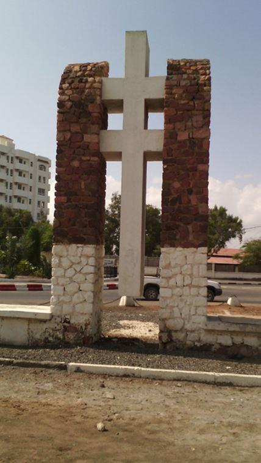Genèse d’une opération de sauvetage mémorielle
Dès mon arrivée à Djibouti en août 2015, j’ai été consterné par l’état de délabrement du rond-point de la croix de Lorraine de Djibouti réalisée en son temps par René Troadec1. Cette stèle représente non seulement la participation armée des Djiboutiens durant la Seconde Guerre mondiale mais honore surtout celles et ceux tombés sous les balles et morts au champ d’honneur pour la France. Seul symbole visible de la fraternité d’armes franco-djiboutienne, cette croix de Lorraine se devait de rappeler à l’importante communauté française, mais surtout au peuple djiboutien, le droit à la mémoire que méritent les Djiboutiens qui ont combattus héroïquement en Europe. Il était donc parfaitement légitime que soit réhabilité cet emblème de la France Libre érigé en l’honneur de celles et ceux tombés sous les balles des vichystes à Djibouti et ceux des tirailleurs fauchés par les tirs des troupes nazies en France2.
Après m’être informé auprès des résidents de longue date tous, sans exception, confirmèrent que la croix de Lorraine avait été laissée totalement à l’abandon depuis de très nombreuses années par les autorités civiles et militaires françaises. Constat d’autant plus amer que celle-ci ne se trouve qu’à quelques mètres seulement de l’Ambassade de France…quel symbole ! Ne pas la restaurer, au risque de la voir disparaître, portait atteinte à l’honneur de la France et risquait de démontrer le peu d’intérêt porté au sacrifice consenti par les FFL djiboutiens. En effet les sacrifices consentis et les mérites reconnus, de ces valeureux militaires venus des confins de la mer Rouge, devaient nous rappeler non seulement qu’en 1945, le Bataillon Somali allait se couvrir de gloire lors des combats de la Pointe de Grave en avril 1945…
« (…) A mené pendant 7 jours dans la pointe de Grave, du 14 au 20 avril, un combat exceptionnellement dure contre un ennemi enragé à se défendre, allant jusqu'à se faire sauter plutôt que de se rendre, très fortement armé et appuyé sur des ouvrages cuirassés à toute épreuve, couvert par un terrain d'inondation dont les passes étroites étaient littéralement bourrées de mines. A tué 947 Allemands, pris 100 ouvrages bétonnés et 90 pièces de canon, fait 3.300 prisonniers. Fait d'armes qui mérite de prendre rang dans les annales de cette guerre. (…) »
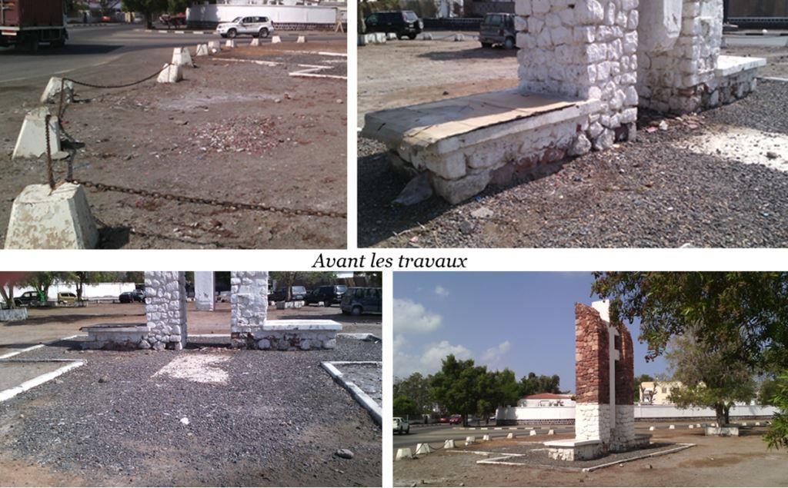
Citation du général de Larminat à chaque unité (ordre général N° 102)
… mais que certains ont payé de leur vie l’aide apporté aux premiers Français Libres de Djibouti, et par conséquent ont bien brandi la flamme de la Résistance dès 1940 ! J’avais donc tenté d’inciter l’ambassadeur de France et l’attaché militaire de l’époque à enfin respecter le devoir de mémoire partagée et les inciter à commémorer l’appel du 18 juin et du 8 mai sur cette place rénovée ! Avec un peu de naïveté, je concevais pouvoir compter sur leur soutien. Mais devant le manque d’intérêt et le peu d’empressement des autorités françaises à Djibouti je me suis lassé de recevoir des fins de non-recevoir. Je me suis donc tout naturellement tourné vers les autorités djiboutiennes, qui m’ont réservé le meilleur accueil qui soit. Il était en effet impensable de me lancer dans des travaux sans l’avis et l’accord des autorités locales. Dans un premier temps, j’ai eu le privilège d’obtenir l’autorisation du Préfet de Djibouti pour prendre la direction de cette opération de rénovation. Puis très rapidement, et grâce à l’intervention de Monsieur Alexis Mohamed chargé de mission à la présidence, son Excellence Monsieur Ismaël Omar Guelleh, Président de la République de Djibouti à bien voulu concéder son haut patronage au projet pour que l’on puisse mener à bien cette réhabilitation.
Aussi nous avons pu travailler durant trois années à la réhabilitation du site, la remise en peinture, de lourds travaux de rénovation, et enfin la mise en place de deux mâts des couleurs offerts ainsi que de plaques commémoratives par un mécène bien connu à Djibouti3.
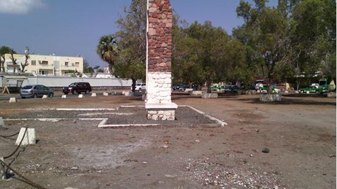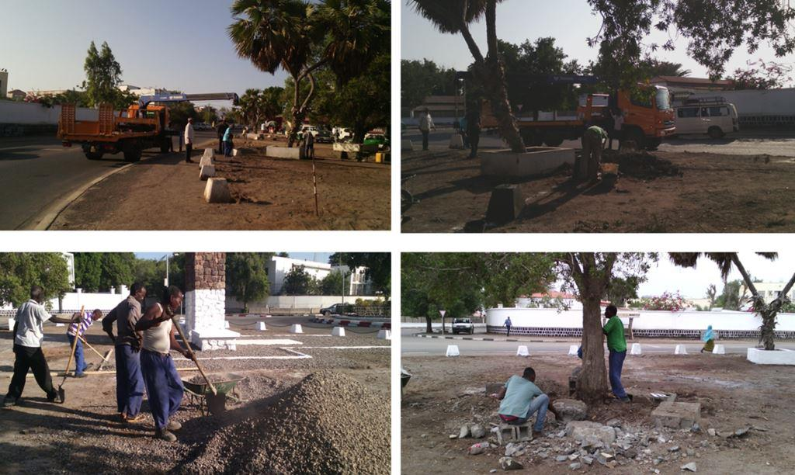Afin de permettre une future inauguration officielle, j’ai eu de nombreux entretiens avec les représentants du protocole et du ministère de la défense djiboutiens qui attendaient de trouver la date anniversaire la plus propice ; les autorités françaises s’en désintéressant totalement jusqu’alors. Avant mon départ en septembre 2018 c’est non sans fierté que j’ai ressentis la satisfaction d’avoir pu mener à bien ce projet mémoriel, envers et contre tous, en hommage à tous les anciens frères d’armes Djiboutiens des FFL aujourd’hui disparus ; mais permettant à leurs familles d’être fières de l’engagement pris par leurs ainés pour participer à la Libération de la France. C’était pour moi un acte de reconnaissance que de contribution vouloir entretenir la mémoire des Djiboutiens morts pour la France et encourager les jeunes générations à découvrir l’histoire de ceux qui ont sacrifiés leur vie pour notre pays.
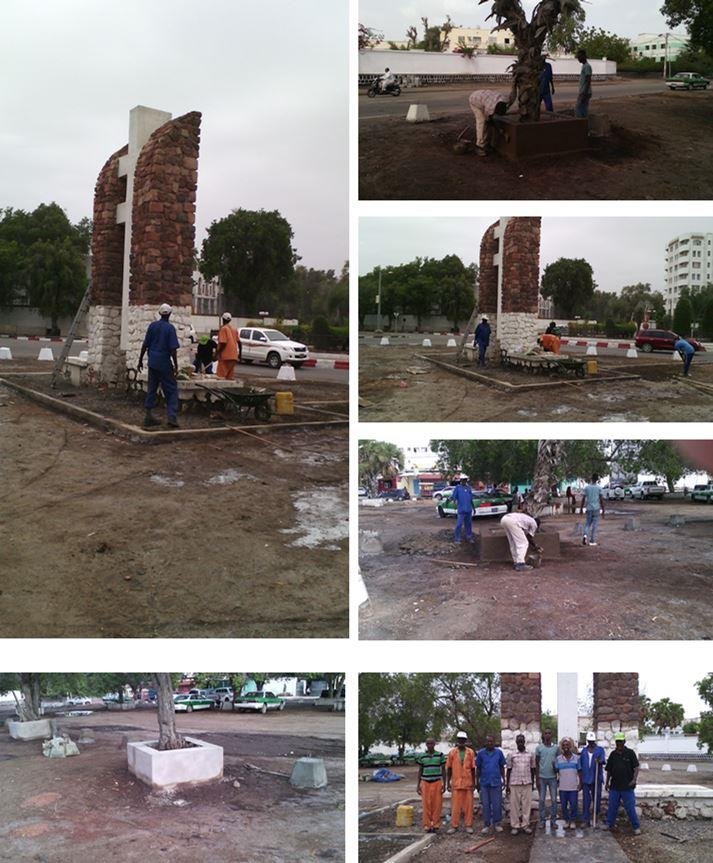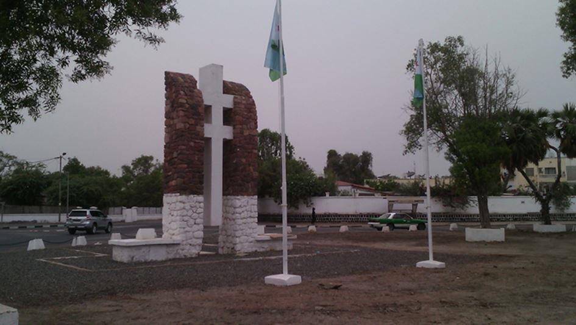
Djibouti, terre de la France Libre
« Un lien très étroit unit la France à Djibouti pour lutter contre l’ennemi allemand lors des deux guerres mondiales, On ne peut envisager l’histoire militaire de la France au XXe siècle, sans évoquer les soldats djiboutiens. L’aventure du Bataillon Somali commence dans le cadre de la reconquête et la Libération de la France, en particulier pour lutter contre l’Allemagne. Les Allemands étant pratiquement deux fois plus nombreux que les Français, de nombreux contingents africains, dont le Bataillon Somali, débarqueront sur le sol français. »
« (…) Si les morts (Djiboutiens) pour la France furent beaucoup moins nombreux que durant la Grande Guerre, ils ne peuvent pour autant être occultés sous prétexte qu’ils ont participé à des opérations secondaires et tardives. »4
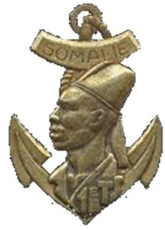Le conflit débute en quelque sorte à Djibouti en 1935, date du début du conflit italo-éthiopien5 où durant cinq ans Djibouti doit faire face aux pressions politiques, coloniales et territoriales du gouvernement fasciste de Benito Mussolini qui convoite le port et le chemin de fer français. Cette période correspond à la militarisation de la colonie. Quelques jours seulement après l’appel du Général de Gaulle, il revient à deux officiers6 de prendre l’initiative de la création officielle des Forces françaises libres de la Cote Française de Somali. Durant l’été 1940, les FFL/CFS s’organisent avec les moyens du bord et sont immédiatement poursuivis par le tristement célèbre gouverneur vichyste Pierre Nouailhetas qui vient d’être nommé par le gouvernement Pétain qui exerce sans tarder une répression féroce7 contre toute attitude jugée hostile à Vichy8.
Malgré cela des volontaires se présentent, et le détachement FFL des CFS9 compte promptement plus de 300 hommes dans ses rangs. Très rapidement les éléments s’étoffent et le détachement F.F.L. de la C.F.S. devient un corps Somali. La fin de l’année 1942 va accélérer le ralliement de la CFS10 à la cause gaulliste. En 1943, le bataillon se complète sur le type britannique, tout en poursuivant son instruction, il se dédouble, de façon à former un bataillon de marche et un bataillon de souveraineté. Enfin, le 27 février 1944, un premier détachement est mis en route pour l’Afrique du Nord et se trouve regroupé en Tunisie où il est restructuré et équipé pour le départ en France.
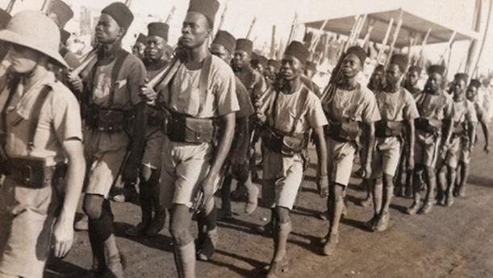Composé de trois bataillons, le bataillon Somali débarquent, le 22 février, à Marseille pour compléter, avec le Bataillon de Marche n° 14 et 15 déjà sur place, le régiment de marche d’Afrique Équatoriale Française et Somali.
Le 23 mars, le régiment d’AEF et Somali est incorporé au sein de l’armée française de l’Atlantique sous les ordres du général de Larminat. Il est affecté, dans le secteur de la pointe de Grave pour relever deux bataillons FFI. Une très grande activité de patrouilles de nuit, escarmouches, bombardements violents sont le lot quotidien de nos Somalis et permettent d’aguerrir les tirailleurs. Pour les Forces françaises rattachées aux armées alliées et placées sous l'autorité du général américain Jacob Devers (à Vittel), lui-même agissant sous contrôle du commandement suprême des Forces Alliées en Europe, commence alors une période d'attente dans des conditions difficiles. En attendant l'attaque finale, il ne se passe que quelques escarmouches aux frontières de la poche, qui se soldent en général par des échecs allemands et cessent à partir de janvier 1945.
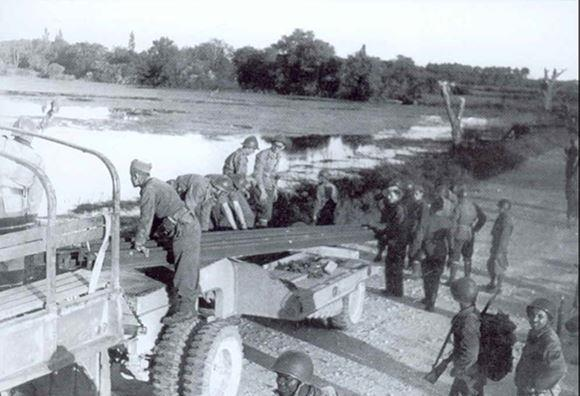
Le Bataillon face aux « forteresses du Führer »
« Le Führer ordonne : Dans le territoire placé sous les ordres du commandant général des forces armées du front de l'Ouest, les secteurs défensifs côtiers suivants sont désignés comme "Festungen" : (…) d) dans le secteur de la 1ère armée : les rives nord et sud de la Gironde [...]. Jodl, Directive du 19 janvier 1944.
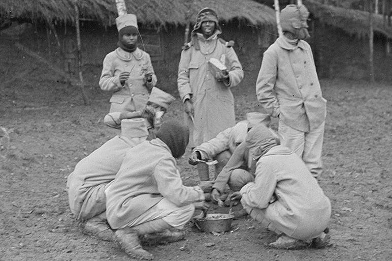
1er bataillon de tirailleurs somalis
Dès janvier 1944, Hitler avait donné l’ordre à ses Généraux de prendre toutes les mesures possibles destinées à dissuader les Alliés de lancer un débarquement. Les Allemands vont profiter des mois qui précèdent le débarquement pour développer leur système défensif et étendre les champs de mines. Pour ce faire, il font renforcer et lourdement fortifier les plus importantes villes côtières françaises tout au long du mur de l'Atlantique dans l’espoir de pouvoir arrêter ou ralentir l'avance des Alliés en faisant la jonction entre villes « forteresse ». Les batteries d’artillerie allemandes forment ainsi un ensemble de plusieurs éléments bétonnés et fortifiés composant un ensemble qui permet à chaque batterie d'assurer non seulement sa propre protection mais aussi sa logistique et son intendance. À l'intérieur des terres, les troupes allemandes confortent les axes routiers qui desserve la forteresse par des tranchées anti chars équipés de cloches blindées sur des abris en béton. Hitler pense ainsi assurer l'emploi opérationnelle des ses sous-marins et empêcher les Alliés d'utiliser les ports de la Kriegsmarine. Parmi ses sites figuraient en bonne place les forteresses11 de la poche de Royan12 et la pointe de Grave13« en allemand Festungen Girondemündung Nord und Süd. »
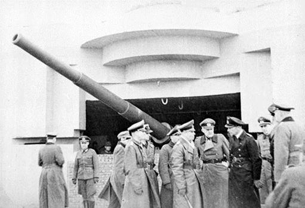Courant mars 1944, les commandants de forteresse côtières reçoivent du Haut commandement de la Wehrmacht une directive soulignant l’importance stratégiques de leur site et qu’en cas de tentative de débarquement de se battre « jusqu'au dernier homme » ou « jusqu'à la dernière cartouche » sans jamais capituler tout en infligeant le plus grand nombre de pertes à l’ennemie.
Le BMS attaque la pointe de Grave !
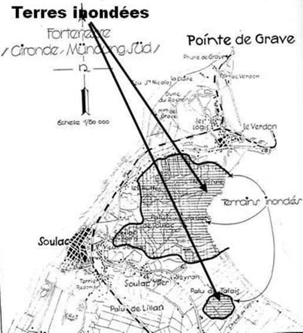Le bataillon Somali sera engagé dans les combats de la Pointe de Grave le 15 avril 1945, dans une zone inondée et parsemé de blockhaus. Les positions ennemies fortement défendus par les mitrailleuses lourdes sont enlevées de haute lutte à la grenade, après de très dures progressions. Acharnés à prouver leur vaillance au combat, les hommes du bataillon nettoient les positions ennemies souvent au crops à corps et encerclées les premiers Allemands se rendent.
À cette occasion, le bataillon subi ses premières pertes sérieuses mais le premier objectif fixé est atteint à l’entière satisfaction du commandement.
Le 18 avril, l’offensive reprend et le B.M.S. reçoit pour objectif le fossé antichars de la pointe de Grave puis le réduit bétonné de Soulac, constituant le P.C. des forces ennemies. Après une difficile progression à travers les marais, truffés de mines, et sous un violent bombardement de canons de 155 mm les hommes du bataillon poussent à travers bois pour objectif de libérer le village de Soulac. Malgré une lutte de tous les instants, tous les objectifs sont atteints et 20 avril la garnison allemande au bout de ses forces se rend au bataillon. Après ce fait d’armes, le bataillon passe en soutien et s’installe au nord de la ligne Soulac-les-Bains - Soulac-le-Vieux, où ils installent leur P.C. Mais la fougue et l’habileté manœuvrière portent aussi son lot de malheur, les chiffres de leurs pertes suffisent à montrer l’âpreté des combats qu’ils ont livré au cours de ces combats. En effet, les pertes du bataillon somali s'élèvent à 41 tués et 106 blessés soit 147 hommes sur un effectif de 860.
De Gaulle honore le bataillon
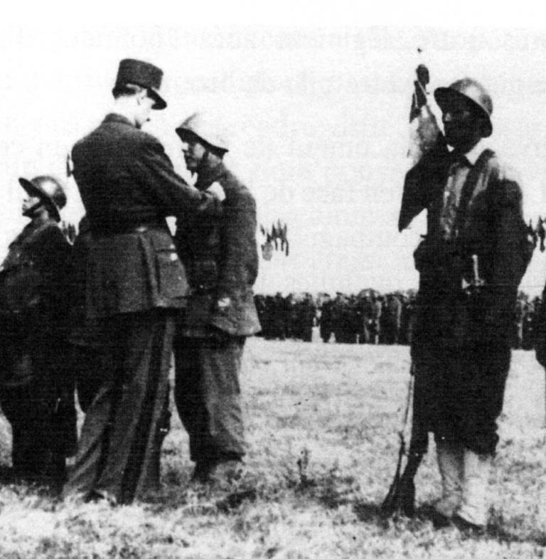Depuis le début des opérations, les Somalis avaient fait preuve d’un allant et d’un mordant magnifique et se sont montrés dignes des tirailleurs Somalis de la Grande Guerre, héros de Verdun. Le 22 avril, au cours d’une prise d’armes qui rassemblait des éléments de toutes les forces de la pointe de la Grave, le général de Gaulle accroche lui-même une croix de guerre avec palme au fanion du bataillon, à côté de celle qui rappelait l’héroïsme au cours de la dernière guerre par le 1er bataillon Somali.
Elle était accompagnée de la citation suivante :
« Bataillon qui, sous le commandement calme et énergique du chef de bataillon de Bentzmann a, par sa valeur, sa bravoure et son opiniâtreté, réussi le 15 avril 1945, le franchissement de vive force, sous le tir violent et ajusté de l’ennemi, de la ligne d’eau du Gua, large de plus de 400 mètres, par son habile manœuvre, a fait tomber les défenses ennemies du Pont du Gua. Dans la journée du 18 avril a bousculé l’ennemi sur les fortes positions d’un fossé antichars, et d’un seul élan, a enlevé le village de Vieux-Soulac, ainsi que l’ensemble très fortement bétonné et vigoureusement défendu des ouvrages constituant le poste de commandement de la forteresse ennemie de la Pointe de Grave. Au cours des deux journées de combat a fait 300 prisonniers. — Citation à l'ordre de l'armée attribuée au bataillon de marche somali (BMS) du régiment de marche d’Afrique équatoriale française et somalie pour avoir réussi le franchissement de la ligne d’eau du Gua au cours des combats de la pointe de Grave, Décision no 1 058 du 20 août 1945, Charles de Gaulle. »
Le général de Gaulle, lui, n’oubliera jamais que ce sont les colonies africaines qui furent les premières à se rallier à la France libre.
Fin de campagne et retour au pays
Le 25 avril, le B.M.S. quitte Soulac pour le secteur de La Rochelle, et le 14 juillet 1945, c’est le défilé à travers les rues de Bordeaux, les Bordelais font au bataillon une ovation indescriptible, saluant en eux les libérateurs de la Pointe de Grave.
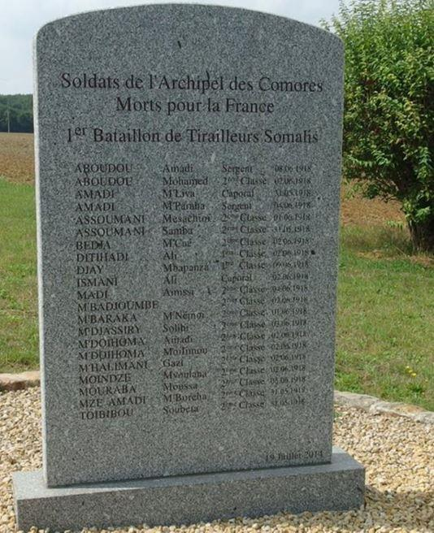À l’issue le bataillon sera chargé d’assurer la sécurité d’une portion de la frontière et de la répression de la contrebande dans cette région. Le 1er août 1945 le B.M.S. reprenant, son autonomie, et devenu entre-temps une « Unité de Rapatriables », quitte Bayonne pour la région bordelaise, où il est affecté au service de garde des P.G. Allemands. Un dernier défilé le 17 avril 1946 à Soulac avant de débuter les détachements successifs qui s’échelonnèrent jusqu’au mois de juin 1946, date à laquelle le bataillon sera dissous et où les tirailleurs Somalis rentrèrent à Djibouti.
Au regard de la bravoure et de l’héroïsme démontrés durant la Seconde Guerre mondiale par les tirailleurs somalis, il m’apparaissait un devoir que d’honorer dignement ces soldats morts contre la barbarie nazie sur le sol de France. Aussi en relation avec l’Union des Gaullistes de France, dont j’étais à l’époque conseiller du Président, et le Souvenir Français.
A.W.
NOTES ET RÉFÉRENCES
1. Érigé à l’époque par René Troadec, Compagnon de la Libération, et ancien aide de camp du Général Leclerc.
2. L’une des quelques centaines d’unités de tirailleurs indigènes mobilisés par les troupes coloniales de l’armée française durant la seconde Guerre Mondiale.
3. Monsieur Larry MODI, des Établissements Fratacci.
4. Laurent Joly. In : Les tirailleurs Somali : le métier des armes instrumentalisé.
5. Dès 1941, les Italiens, balayés par les troupes anglo-saxonnes, se retirent du jeu politique régional. Ce sont les Britanniques qui prennent alors l’initiative dans la région avec celles de la France libre.
6. Chef de bataillon Appert et du capitaine Magendie.
7. Une vie humaine comptait peu sous le gouvernement de Nouailhetas et le tribunal militaire la sacrifiait toujours sans hésiter quand on estimait nécessaire une exécution à grand spectacle. Des Somalis dont le seul crime était d’avoir transporté des messages des lignes gaullistes aux nôtres furent sans pitié passés par les armes « (….) Le 10 mai 1941, deux femmes sont exécutées à Ali Sabieh, elles sont soupçonnées d’inciter à la désertion les tirailleurs sénégalais qu’elles fréquentent. Le même jour, un jeune garçon de 13 ans est fusillé également à Ali Sabieh pour avoir porté des messages gaullistes. Le 13 mai, c’est un ancien combattant qui est condamné à la peine capitale par le tribunal militaire, il est exécuté le lendemain. Il s’agit de Fareh Abdi (…) il était titulaire de la Croix de guerre, de la médaille interalliée et de la médaille commémorative de la Grande Guerre. Un seul Européen fut exécuté pour son soutien aux gaullistes, mais plusieurs colonisés furent victimes des décisions du gouverneur.
8. Henry de Monfreid, pourtant dépourvu de sympathies à la cause gaulliste, décrit en ces termes cette répression : « (…). Il déploya pour les combattre une férocité digne du fanatisme d’un moine inquisiteur.
9. L’instruction n° 621/CO/2958/I du 26 juin 1941.
10. à la fin de l’année 1942, les FFL/CFS comptent 407 hommes dont 361 originaires de la CFS. Leur nombre n’a donc pas augmenté sensiblement entre janvier et décembre, les moyens limités en sont responsables, tout comme la volonté d’entraîner au mieux les premières recrues afin de les envoyer éventuellement sur un théâtre d’opération extérieur.
11. La poche n'est pas d'un seul tenant puisqu'elle est constituée d'une part d'une zone de 500 km2 (dite Gironde Nord) qui s'étendait du sud de l'île d'Oléron jusqu'à la hauteur de l'estuaire de la Gironde, comprenant la presqu'île d'Arvert et centrée sur la ville de Royan, et d'autre part d'une zone de 200 km2 (dite Gironde Sud) constituée par la pointe de Grave jusqu'à Saint-Vivien-de-Médoc et Vensac.
12. Constituant un des principaux verrous de l'estuaire de la Gironde et du port de Bordeaux, La poche de Royan est constituée d'une part d'une zone de 500 km2 (dite Gironde Nord) qui s'étendait du sud de l'île d'Oléron jusqu'à la hauteur de l'estuaire de la Gironde (la Seudre au nord) comprenait la presqu'île d'Arvert et centrée sur la ville de Royan
13. et d'autre part d'une zone de 200 km2 (dite Gironde Sud) constituée par la pointe de Grave jusqu'à Saint-Vivien-de-Médoc et Vensac transformée en forteresse, ceinturée par une double, voire triple ceinture de champs de mines et d'ouvrages fortifiés, est au cœur de ce dispositif.
Partager cette page